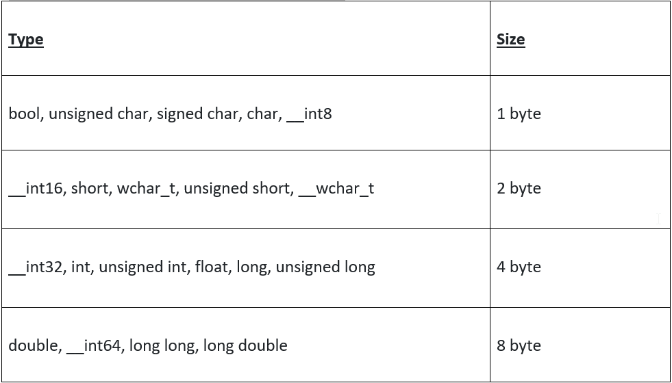
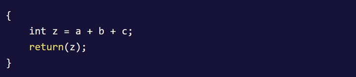

Space Complexity of an algorithm or program is the total amount of memory or space taken by an algorithm as a function of the size of input. Let’s try in simple words, it is the memory required by an algorithm to execute a program and produce output. From this we can say space complexity is a parallel concept to time complexity.
Algorithm mainly uses memory space for three vital reasons:We have already discussed Time Complexity, if you haven’t do surely read that… The time complexity of an algorithm is commonly expressed using the Big O notation as discussed, which is an asymptotic notation to represent the time complexity. Space complexity, is like time complexity, is often expressed asymptotically in Big-O notation, such as O(n), O(nlog(n)), O(n^2), etc., where n is the input size in units of bits needed to represent the input.
For calculating the space complexity, we need to know the value of memory used by different types of data-type variables, which generally it varies for different operating systems, but the method for all calculations remains the same.
Now, let us try to learn how to calculate space complexity by taking a few examples:
We can see in the above expression, variables a, b, c and z are all integer types, hence they will take up 4 bytes each. Also, an additional 4 bytes are used up by the system. So, as per the total memory requirement will be (4(4) + 4) = 20 bytes. The additional 4 bytes is for return value and since this space requirement is fixed for the above example, hence it is called Constant Space Complexity.
In the above code, 4n bytes of space is required for the array a[] and 4 bytes each for variables x, n, i and the return value. Therefore, the total memory required will be (4n + 12) bytes, that increases linearly with the increase in the input value n, hence it is known as Linear Space Complexity.
Similarly, as the complexity of an algorithm increases, we can have quadratic and other complex space complexity as well.
However, we should always focus on writing algorithm code in such a way that we keep the memory used up by the system to run the program to a minimum.